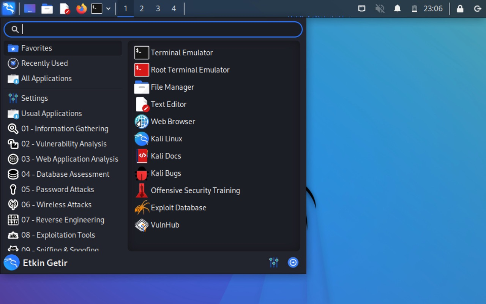
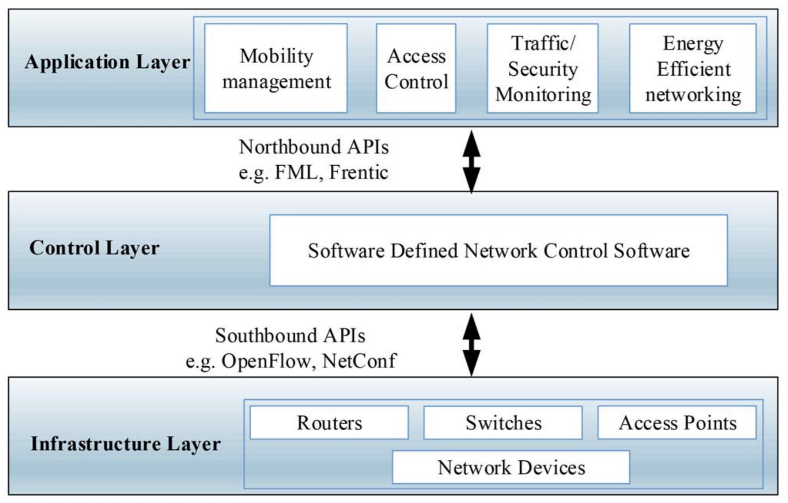

Network Security
My reflections on the units included within the module.
Module reflections
What?
Before starting this module, I only had a rough idea about vulnerability analysis and penetration testing and I was not able to tell the difference between the two. Likewise, I was not familiar with the threat modelling frameworks like STRIDE (Microsoft, 2022) or DREAD (Howard & LeBlanc, 2004: 93-94).
Even though I sometimes used ping to check if a website was available, I was not aware of how ping or other similar tools like traceroute or mtr fit within the wider context of ICMP protocol and TCP/IP suite. I did not know any of the tools that are used or protocols like ICMP that play a crucial role in the TCP/IP suite. Even though I was already knowledgeable about various Linux distros and used some of them, I did not use Kali Linux at all until I started this module.
Having said all these, largely due to my knowledge gap, I was pretty anxious when I started the module and my anxiety only increased when I heard that much of my fellow classmates were familiar with the theme of this unit and even some of them were security professionals.
So what?
Throughout the module, I had the opportunity to get a hands-on experience with Kali Linux distro as well as various tools such as nmap, traceroute, and OWASP ZAP. Figuring out how to use these tools were one thing, but for me, the most challenging part was to how to interpret the outcome of the tools. It took me a lot of research and practice to make sense of it all, but in the end, it helped me to gain my confidence and valuable information about the basic techniques of vulnerability assessment. Especially, the scanning activity helped a lot in this respect.
I saw a huge benefit of interactive seminars in the Solar Winds Breach Case Study in which we were expected to apply the Cyber Kill Chain (Hutchins et al., 2011) model to the breach. As I demonstrated in this module’s artefacts on my e-portfolio, even though I had a difficult time applying the model to the case study, after watching the seminar and reviewing the work of my peers, I had a better understanding of how the module could be applied and had a more successful second iteration. Similarly, the collaborative discussions included in the module helped me to have a look at a subject area from different angles and learn from my peers.
As far as the assignments are concerned, without a doubt, I can affirm that these were the most challenging of them all so far in my studies. Especially I was quite discouraged after receiving only a pass from my first assignment in which we were expected to prepare a baseline analysis document. However, the feedback I received from my tutor helped me to identify my weaknesses and work on the second assessment in a more informed manner. For instance, I was not able to frame the issue into a broad threat modelling framework, but drawing on the feedback I received, I was able to use the STRIDE framework to streamline my findings.
It was very enlightening for me to see how things can get very technical quickly when carrying out a vulnerability assessment. However, in a business environment, it is important to produce a report that is understandable by all stakeholders including the C-level executives which might not be coming from an IT background. I found it quite demanding to find the right balance when writing the executive summary of my report, but eventually I believe that I came up with a report which conveys the right message, without going into deep technical details but, at the same time, without missing any essential information.
Now what?
Having added valuable tools for vulnerability analysis to my arsenal, I intend to spend more time exploring and practicing the analysis tools in order to get the hang of them. I believe that this will help not only in my studies, but also assist me to assess the potential vulnerabilities and design secure systems and in my professional career.
Now that I have a raised awareness towards different threat modelling frameworks, I will be able to apply them in the projects that I will be a part of. This way, I think it will be easier for all stakeholders to make sense of my findings and conclusions.
It is no secret that IT security and business world are intertwined with each other. So, I think writing business-oriented reports is one of the most valuable I have gained from this module, and I think it will prove useful for me in my future career as I now know that it is highly likely that business executives do not have an IT background and it would be inappropriate and discouraging to present them a report full of technical details.
References:
Howard, M. & LeBlanc, D. (2004) Writing secure code. 2nd ed. Sebastopol: Microsoft Press.
Hutchins, E. M., Cloppert, M. J. & Amin, R. M. (2011) Intelligence-Driven Computer Network Defense Informed by Analysis of Adversary Campaigns and Intrusion Kill Chains. Leading Issues in Information Warfare & Security Research. 1: 78-104.
Microsoft (2022) Microsoft Threat Modeling Tool. Available from: https://learn.microsoft.com/en-us/azure/security/develop/threat-modeling-tool-threats#stride-model [Accessed 1 March 2023].
Unit 1: History of Network Security, Vulnerabilities and Approaches
My reflections about the unit:
To begin with, Network Security is not a topic I am familiar with, so, I am excited and motivated to take this opportunity to learn one of the fundamental topics of computer science.
I was fascinated to trace back the history of information systems security to 1960s in this unit’s lecturecast. I also had the opportunity to familiarize with important concepts like CIA(+N) and cyber kill chain. I must admit that, especially while reading the core book, at times I felt lost, largely due to gaps in my knowledge (such as intricate details about OSI) but I am pretty confident that over time I will be able to fill these gaps by engaging with the module content. For starters, following the advice from the core book, I installed Kali Linux on a virtual machine (VirtualBox) on my intel-based Mac (I am yet to figure out how I can get it working on my M1-based iMac though). I am planning to explore the various tools it offers and follow the examples in the book to get a hands-on experience.

Kali Linux installation on my MacBook (on VirtualBox)
Key takeaways:
- The main concepts of Information Security Management (ISM) are CIA+N: Confidentiality, Integrity, and Availability + Non-repudiation
- Recovery Time Objective (RTO) is concerned with how quickly a system should be recovered.
- Recovery Point Objective (RPO) is concerned with how much data can be lost.
- Principles for the Protection of Data (Saltzer and Schroeder, 1975): (1) Economy of mechanism, (2) Least privilege, (3) Open design (e.g. not security through obscurity), (4) Fail-safe defaults (e.g. deny first), (5) Separation of privilege (e.g. 2FA), (6) The least common mechanism, (7) Complete mediation (e.g. checks at regular intervals), (8) Psychological acceptability, (9) Work factor, (10) Compromise recordings (e.g. auditing and logging).
- Every vulnerability assessment (or pen-test) should start with a discovery phase. This phase involves personal information discovery (PID), literature search (to gather information about the operating system, middleware and applications deployed) and comparing the information gathered against vulnerability databases to find vulnerabilities for the software in question.
- Two important approaches to security assessment (among others) are static analysis and dynamic testing.
- Static analysis includes design review, configuration review and static code analysis. It is an effective way to identify vulnerabilities in a system, but it is costly and it can produce false positives.
- Dynamic testing includes network infrastructure testing, web application testing, web service testing and internet-based social engineering. In this case, testing is carried out from the perspective of an attacker.
- Four steps of best practice Network Security Assessment Methodology: (1) Reconnaissance, (2) Vulnerability scanning, (3) Investigation of vulnerabilities, (4) Exploitation of vulnerabilitie
Unit 2: Advanced Persistent Threats: Applying the Cyber Kill Chain Model to a Case Study
My reflections about the unit:
This unit focused on the cyber kill chain model and the SolarWinds exploit, and the basics of penetration testing and threat modeling. I had a hard time applying cyber kill chain model to the SolarWinds hack, especially the exploitation and the installation phases were not clear to me based on the information provided on the referred sources. I was not able to come up with a mitigation and required tools for each of the steps. Even though I was a little bit discouraged by that, in fact it was still a very good opportunity to familiarize myself with the cyber kill chain model.
I also carried out the literature review for the potential vulnerabilities with the website I chose last week. Compared to last week, I feel much more confident because I feel like it is all coming together and I am much more familiar with the potential vulnerabilities, attack patterns and the tools that I can use. I am already looking forward for the last week during which I will perform a basic scan of the website.
Reflections on Vulnerability Analysis – Literature Review Activity:
I chose an e-commerce website (https://buymenow.org.uk) and I started off the literature review by searching for specific vulnerabilities of e-commerce websites. However, it turned out that finding such vulnerabilities right away on the the vulnerability databases such as NIST or CVE.org was not possible. Because when searching for vulnerabilities on these websites, you have to enter specific vulnerability type that you are looking for. In order to overcome this challenge, I have carried out a broad literature review which included reputable software, news and research websites and came up with a shortlist of the most common vulnerabilities of e-commerce websites, such as XSS, e-skimming and SQL injections. Then, when I went back to the vulnerability databases and searched for the exact terms (like XSS) I was able to see the specific vulnerabilities that were identified. Also, the number of search results was a good indicator of the severity of the vulnerability in question.
However, I found websites of reputable software companies or researchers more useful because they included much more information, real-life examples and the content was kept up to date. So, I skimmed a number of websites to find out the common vulnerabilities with websites and reviewed them carefully to identify which of these potential vulnerabilities would apply to the website in question.
Another important point to consider was that this website would also be potentially vulnerable to the common vulnerabilities of websites and web applications. So, vulnerabilities identified by OWASP (2021) and other organizations would also be taken into consideration.
Since this will be the baseline for my final report, I think this literature review was very useful. I will continue from here to analyze my website against these vulnerabilities. You can see my shortlist of vulnerabilities here
Key takeaways:
- Types of penetration testing: Whitebox testing and blackbox testing.
- A typical pattern for penetration testing: Initial engagement, scoping, testing, reporting and follow up.
- The assessment of the penetration testing report and selecting the solutions to be implemented is down to the risk owner and should not be outsourced to the test team.
- STRIDE: Spoofing, Tampering, Info Disclosure, Repudiation, Denial of Service and Elevation of Privilege.
- An enterprise should use a boundary firewall to restrict inbound and outbound network traffic. When an organization doesn’t control the network a device is connected to, a software firewall must be configured on the device.
- Best practice: Use separate accounts to perform administrative activities only and do not use the admin account for activities that might expose administrative privileges to attackers (e.g. emailing or web browsing or other standard user activities)
- Best practice: If possible, avoid using SMS for MFA. But it is still far better than not having a MFA in place.
- For optimum security, all released updates should be applied within 14 days (at maximum).
- When using cloud, the responsibility of applying security requirement and controls vary depending on the cloud service model:
Requirement IaaS PaaS SaaS Firewalls User/Provider Provider (sometimes user) Provider Secure configuration User/Provider User/Provider User/Provider User access control User User User Malware protection User/Provider Provider (sometimes user) Provider Security update management User/Provider User/Provider Provider Table 1: Responsibility matrix depending on the cloud service model (NCSC, 2021)
Unit 3: Vulnerability Assessments
My reflections about the unit:
This week, I was excited to receive some detailed information about vulnerability assessments and penetration testing and also to get the opportunity to have a practical experience using some basic tools. In the previous weeks, I was a little bit nervous because I was not sure about the tools I should use or the methodology I should follow. However, this week’s content scanning activity, and the assignment helped me to have a more clear picture about it. I am planning to spend more time exploring more advanced scanning tools during the weeks ahead and also do some more research and reading to be able to interpret the outcome of the scans accurately.
Reflections on Vulnerability Analysis – Scanning Activity:
Since this was the first time I used these scanning tools, it took me some time to figure out how to use them. However, since each of them can be used in a similar way and offer a help content which includes some useful information like the usage of the tool as well as the various flags that can be used with it, I was able to use the tools (at least with the base functionality) in no time.
What took more time was to figure out how to interpret the outcome of the tools. I had to make a research to make sense of the output of each tool and also to identify how I can mitigate the limitations of each. For instance, using traceroute I was able to identify all the hops but I was not able to get a response from one of the hops. After some research, I found out that I could use MTR to identify the packages lost at the hops. When I used the tool, I saw that more than 90% of the package was lost on that hop.
All in all, this was a very useful activity because it helped me to develop an understanding of how I can make use of the various scanning tools. It will also help me prepare my final report as the outcome of the scans will lay the foundation of the vulnerability assessment.
Key takeaways:
- Whereas Traceroute tracks the path of an IP package the source to the destination, MTR also shows the percentage of packages lost (if any).
- Transmission Control Protocol (TCP) provides connection-oriented reliable data delivery, duplicate data suppression, congestion control and flow control.
- User Datagram Protocol (UDP) provides connectionless, unreliable, best-effort service. Applications using UDP have to provide their own end-to-end integrity, flow controlled congestion control (if desired). Usually UDP is used by applications that need fast transport mechanism and can tolerate loss of data.
- In a subnet mask, bits with one indicate positions ascribed to the subnet number, whereas bits with zero indicate those ascribed to the original network number.
- Types of subnettting: Static (fixed length subnet masks or FLSM) and variable length subnetting (variable length subnet masks or VLSM).
- In static subnetting, all subnets use the same subnet mask, wasting more IP addresses, especially in small networks. In variable-length subnetting, each subnet uses a different subnet mask (VLSM), wasting fewer IP addresses. VLSM is the defacto standard today.
- A multihomed host is a host that is connected to multiple networks or subnets.
- Methods of delivery in the IP protocol are unicast, broadcast, multicast, and any cast.
- Different types of broadcast addresses: Limited broadcast address (255.255.255.255, all bits one, directed to all hosts on the local subnet), network-directed broadcast address (valid network number, host number is all ones, directed to all hosts on a network), subnet-directed broadcast address (valid network and subnet number, host number is all ones, directed to all hosts in a subnet), all-subnets-directed broadcast address (valid subnetted network number, host number is all ones, directed to all hosts on all subnets).
- Multicasting allows selecting destination groups, by defining host groups so that the packages are only sent to the members of the host group.
- Anycast allows single IP address to be shared by multiple servers/devices in a network.
- Supernetting is the process of combining multiple networks into a single entry.
- CIDR routes based on the higher order bits of the IP address (not the class of the network number, hence classless).
- The maximum length of an IP datagram is 65,535 octets.
- IP can provide fragmentation and reassembly of datagrams, however, if a fragment gets lost, the complete datagram is considered lost. Since IP doesn’t provide ay acknowledgement mechanism, the remaining fragments are discarded by the destination host.
- Internet Control Message Protocol (ICMP) is used when a router or a destination host must inform the source host about errors in datagram processing. ICMP messages are sent in IP diagrams. Ping and Traceroute are to popular applications based on ICMP.
- Internet Group Management Protocol (IGMP) allows hosts to participate in IP multicasts.
- Address Resolution Protocol (ARP) is a network-specific standard protocol which responsible for converting the higher-level protocol addresses (IP addresses) to physical network addresses.
- Reverse Address Resolution Protocol (RARP) is used when a network host doesn’t know its IP address. In this case physical address is the known parameter and UP address is the queried parameter. A RARP server must exist in the network to respond to this request.
- Bootstrap Protocol (BOOTP) allows a client workstation to initialize with a minimal IP and request its IP address, gateway address and the address of a name server from a BOOTP server.
- Dynamic Host Configuration Protocol (DHCP) is used to automatically providing IP addresses and other related configuration information such as the subnet mask and default gateway. A DHCP server satisfies DGCP requests.
- A port is a 16-bit number used by host-to-host protocol to identify to which higher-level protocol or application program (process) it must deliver incoming messages.
- Two types of ports: Well-known and ephemeral ports.
- Well-known ports are controlled and assigned by the Internet Assigned Number Authority (IANA) and on most systems can only be used by system processes or by programs executed by privileged users. Well-known ports allow clients to find servers without configuration information.
- Ephemeral ports can be used by ordinary user-developed programs on most systems and for as long as it is needed. The port number is contained in the UDP/TCP datagrams.
- A socket is a special type of file handle which is used by a process to request network services from the operating system.
- A socket address is comprised of: < protocol, local-address, local port >
- An association is comprised of: < protocol, local-address, local port, foreign-address, foreign-port >
- Because datagrams are usually directed to certain processes instead of the whole system, applications sending datagrams to a host need to specify a target that is more specific than an IP address. UDP and TCP provide this by using ports.
- TCP uses window principle at the byte-level to ensure reliability.
- Types of IP routing: Static routing and dynamic routing
Unit 4: Breach Analysis and Mitigation
My reflections about the unit:
A lot of in-depth reading about the various penetration testing tools (especially Nmap) was included in this week’s reading list. Even though it was also covered in previous weeks and I already had some practice using them, I was happy to learn new features of the tools or how to use some parameters. Even though Nmap may look like a simple tool, thing can get complicated very quickly when it comes to carrying out an in-depth analysis and interpreting the results. It was also interesting to read about the biggest data breaches in history, especially being a Yahoo user, I was amazed to see that Yahoo was targeted three times by the attackers, each with grave implications. Finally, this week’s collaborative discussion was thought-provoking - logging is a critical and handy tool for system administrators but it comes with its vulnerabilities. You can see my contribution to the collaborative discussion on the Artefacts page.
Key takeaways:
- Primary factor that distinguishes a penetration tester from an assailant is consent.
- Five steps of incident response: (1) Preparation, (2) Detection and Reporting, (3) Triage and Analysis, (4) Containment and Neutralization, (5) Post-Incident Activity (Bandos, 2022).
- Best practice: Filtering inbound and outbound (type 3) messages will help to prevent port scanning.
- Best practice: To reduce the attack surface, instead of offering file transfer via FTP, SFTP, and SCP, elect only to use just SCP.
- Best practice: Disable Telnet, FTP, VNC, and other maintenance protocols that lack transport security through encryption.
Unit 5: Logging, Forensics and Future Trends
My reflections about the unit:
Logging and forensics were the central themes of this week. Even though I was already well-informed about Windows logging system, I was not aware about how it differs from Linux logging system. I had a chance to explore where the logs were stored in my Linux machine. From my point of view, one of the most important activities of this unit was the case study in which we were expected to review a reporting template. It did not help only to prepare the final assignment but also to contemplate on the industry standards for an assessment reporting template.
Reflections on the Case Study (Reviewing an Assessment Reporting Template):
Before beginning this activity, I was not fully aware of the NCSC requirements (NCSC, 2022) of a vulnerability assessment report. So, I had to make a brief research on it. Once I found them out on the NCSC website, I was able to compare the sample report against these requirements without a problem. Since we are expected to prepare the Executive Summary section of a vulnerability assessment report, I think this activity was very useful because it provided me an opportunity to take a critical look at the report and raise my awareness against of the NCSC requirements.
Key takeaways:
- Best practice: In order to verify the authenticity of the ISO file downloaded from Kali Linux website, always check the SHA-256 checksum value of the ISO file and compare it against the the checksum published by Kali developers.
- setuid and setgid bits are particularly important for the files/directories because it may allow an outsider to run a program with super-user right
- All log messages consist of a timestamp, hostname and an application field and some also a status message.
- logrotate is a key log management utility - it is used to manage the number of instances of each log to keep, when to create a new log file, when and how to archive old logs, and even whether to email logs to another destination.
- Security Information Event Management (SIEM) aims to provide an application that can pull together all sources of security alerts and events into one place.
- ELK includes Elasticsearch, Logstash, Cabana and other applications.
- Four steps of Forensic Process according to NIST: (1) Collection, (2) Examination, (3) Analysis, and (4) Reporting.
- IPSec was designed to provide CIA (Confidentiality, Integrity and Availability) by using a two-part solution: Authentication Header (AH) and the Encapsulating Security Payload (ESP).
- DNSSEC doesn’t encrypt DNS messages - it is a cryptographic authentication mechanism aimed to assure the integrity of DNS responses.
- Secure Shell (SSH) provides a secure tunnel that allows remote login and also a variety of protocols to be run over it. It uses a client-server model. It uses cryptographic keys to encrypt the network connection and can either authenticate via public-private key pairs or via simple passwords.
- HTTPS uses either SSL/ TLS (secure socket layer/ transport layer security) to encrypt the layers below the application protocol layer.
- All secure protocols rely on public key infrastructure (PKI) either to exchange session or secure keys. PKI allows keys or certificates to be exchanged while maintaining confidentiality, integrity and availability. It does this by utilising a system of public keys and private keys.
Unit 6: The Great Debate: The Future of the Internet
My reflections about the unit:
There are obvious limitations of today’s internet infrastructure which has been around for decades and this week we had a chance to explore some of the suggested architectures like Named Data Networking (NDN), Content Aware Searching Retrieval and Stream (COAST), MobilityFirst or Software-Defined Networking (SDN). It was quite interesting for me to see how content-aware delivery or named data networking could be an alternative to today’s infrastructure which seems to need an overhaul due to changing characteristics and demands.
Key takeaways:
- Some of the suggestions to overcome the limitations of the current host-centric IP networks include:
- Named Data Networking (NDN)
- Content Aware Searching Retrieval and Stream (COAST)
- MobilityFirst
- Expressive Internet Architecture (XIA)
- Scalability, Control, and Isolation on Next Generation Network (SCION)
- While these innovative approaches bring solutions to certain security issues (such as DDoS), they bring variety new issues due to their novel approach.
- Software-defined networking (SDN) is a next generation, hardware independent paradigm in which networking devices from any vendors could be controlled through SDN. SDN has two prime components: SDN controller is responsible for the management of entire network, and networking switches are responsible for operating based on the instructions deployed through SDN controller.
- SDN consists of three layers: (1) Infrastructure/Data Layer: It comprises of network devices and its main function is to forward packets according to assigned rules/policies. (2) Control Layer: This layer consists of a controller which controls the overall SDN functions. It is responsible for managing the entire traffic flow and takes decisions on routing, flow forwarding and packet dropping through programming. (3) Application Layer: It is responsible for handling software related business and security applications.

Layers in SDN (Rawat & Reddy, 2017)
References:
Bandos, T. (2022) The Five Steps of Incident Response. Available from: https://digitalguardian.com/blog/five-steps-incident-response [Accessed 18 February 2023]
NCSC (2021) Cyber Essentials: Requirements for IT infrastructure. Available from: https://www.ncsc.gov.uk/files/Cyber-Essentials-Requirements-for-IT-infrastructure-3-0.pdf [Accessed 04 February 2023].
NCSC (2022) Penetration Testing: Advice on how to get the most from penetration testing. Available from: https://www.ncsc.gov.uk/guidance/penetration-testing [Accessed 25 February 2023]
OWASP (2021). OWASP Top 10 - 2021. Available from: https://owasp.org/Top10/ [Accessed 05 February 2022].
Rawat, D. B. & Reddy, S. R. (2017) Software Defined Networking Architecture, Security and Energy Efficiency: A Survey. IEEE Communications Surveys & Tutorials 19(1): 325-346.
Saltzer, J. H. & Schroeder, M. D. (1975) The protection of information in computer systems Proceedings of the IEEE 63(9): 1278-1308.